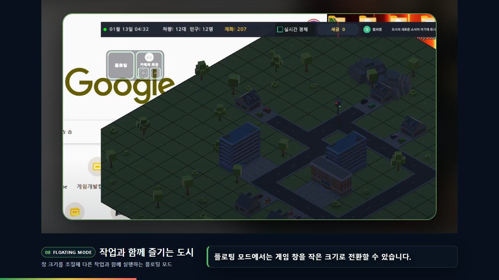
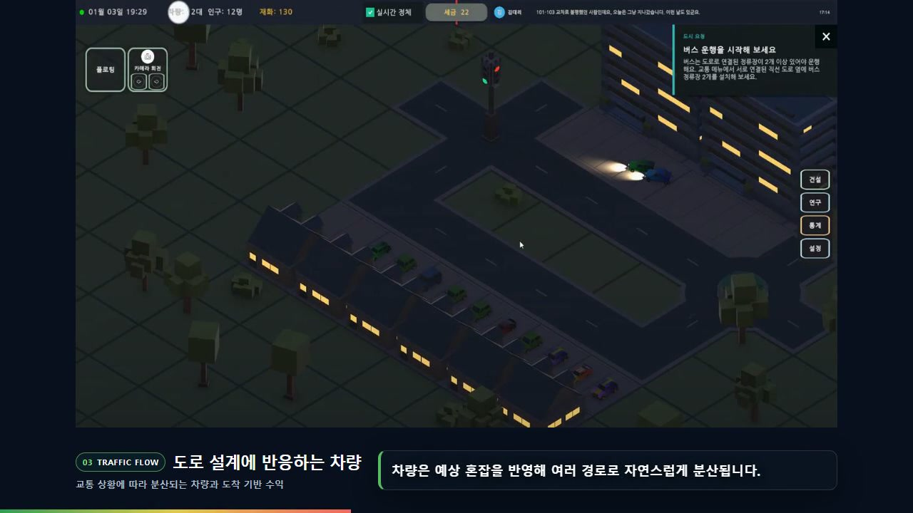
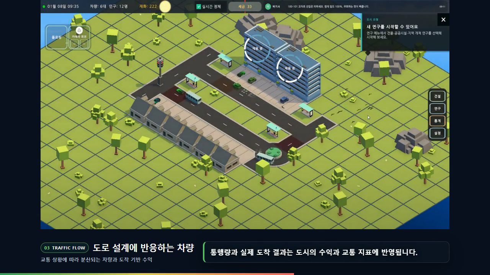

IDLE CITY
5인 팀 · 간판#Unity6 #C# #경로탐색 #시뮬레이션 #EditMode테스트 #기획
IDLE CITY
| 플랫폼 | PC (Windows) | 장르 | 데스크탑 플로팅 방치형 도시건설 시뮬레이션 |
| 개발 인원 | 5명 → 현재 1명(본인) | 개발 기간 | 2026.07.01 – 08.13 (6주) · 팀 개발 완료 이후 솔로 인수, 출시 준비 중 |
| 개발 도구 | C# · Unity 6 (URP) | 소스 | github.com/hjh8874/GreenLight (공개) |
| 요약 | 바탕화면 위에 띄워두고 곁눈으로 보는 방치형 도시 시뮬레이션입니다. 코지 게임의 수요가 커지고 있고 방치형은 파고들 여지가 남아 있는 장르라고 봐서 이 조합을 기획했습니다. 도로를 지으면 교통이 분산되는 것이 핵심 상호작용입니다. 제가 낸 기획안이 부트캠프 최종 프로젝트 기획 선정을 통과해 5인 팀 프로젝트가 됐고, 최초 기획자로 인게임 콘텐츠를 설계하면서 구현에서는 교통 시뮬레이션 코어를 맡았습니다. | ||
| 담당 내용 |
| ||
| 영상 | 팀 시연 영상 (YouTube · 4분 30초) · 소스는 공개 저장소 | ||

2.1 어떤 게임인가
빈 땅에 도로와 건물을 놓으면 도시가 알아서 굴러가는 방치형 시뮬레이션입니다. 창을 전체화면으로 띄우는 대신 바탕화면 위에 얹어두고 다른 일을 하다가 가끔 눈을 주는 형태입니다. 집에 사는 사람이 아침에 회사로 출근하고 저녁에 돌아오는데, 이 통근 차량이 도로를 지나갈 때마다 수익이 들어옵니다.
이 조합을 고른 이유. 코지 게임의 수요가 눈에 띄게 커지고 있었고, 방치형은 완성된 형태가 굳어진 장르가 아니라 아직 파고들 여지가 남아 있다고 봤습니다. 바탕화면에 상주하는 형태는 그 두 가지가 만나는 자리입니다. 오래 켜두는 게임이니 보고 있지 않을 때도 도시가 스스로 굴러가야 하고, 그 요구가 뒤의 기술적 선택 대부분을 결정했습니다.

문제는 길이 막히면 수익이 멈춘다는 것입니다. 회사 3종(사무실·물류창고·공장)의 출퇴근 시각을 일부러 겹쳐 놨기 때문에 러시아워가 생기고, 플레이어는 그걸 보고 도로를 넓히거나 우회로를 내거나 신호등·버스 정류장을 삽니다.
그래서 도로를 지으면 교통이 분산된다가 이 게임의 핵심 상호작용입니다. 이것이 성립하지 않으면 도로를 짓는 행위 자체가 의미를 잃습니다. 바로 다음 절이 그 이야기입니다.
2.2 통행 배정 알고리즘 설계
- PROBLEM
- 우회로를 지어도 통행량이 옮겨가지 않았습니다. 도로를 짓는 행위 자체가 무의미해지는 상태라, 기획의 핵심 상호작용이 성립하지 않았습니다
- 원인
- 최단 경로 탐색을 수백 번 돌리면 수백 대가 전부 같은 답을 돌려받습니다. 한 대씩 보면 전부 정답인 게 문제였습니다
- CONSTRAINT
- 혼잡을 반영하는 휴리스틱은 만들 수 없었습니다. 부하는 지금 이 경로를 배정하면서 생기는 중이라 순환 의존이 되기 때문입니다
- OPTIONS
- ① 차량마다 무작위 가중치를 섞는다 → 분산은 되지만 이유가 없어 플레이어가 학습할 수 없습니다
② 우회를 지시하는 규칙을 넣는다 → 도로 종류가 늘 때마다 규칙이 늘어납니다
③ 배정 자체를 순차로 바꾼다 → 채택 - DECISION
- 수요를 한 대씩 순차로 배정하면서 확정된 경로의 타일에 부하를 쌓고, 다음 차량이 그 부하를 비용으로 읽게 했습니다.
step = 1 + w × (부하 / 수용량), w=2 - RESULT
- 우회를 지시하는 분기문 없이 통행량이 병렬 도로로 분산됩니다.
w=0이면 실패하는 회귀 테스트로 특성을 고정했고, 세이브·로드 재현성을 위해 전 구간 tie-break를 명시했습니다 - VERIFY
- 구현하고 나서 대조해 보니 교통공학의 점증 통행배정과 같은 구조였습니다. 이름을 먼저 알고 쓴 게 아니라 문제에서 나온 셈입니다
서로를 모른 채 독립 계산수백 대가 동일 경로
우회로 건설 후 통행량 이동 0
확정 경로 타일에 부하 적립우회 지시 분기문 0개로 분산
w=0이면 실패하는 회귀 테스트
⚠️ 분산의 정도는 아직 수치로 재지 않았습니다. 지금 제시할 수 있는 증거는 특성을 고정한 회귀 테스트까지이고, 부하 감소율 측정은 다음 작업입니다. 재지 않은 값을 적지 않으려고 여기에 밝혀둡니다.
RoutePlanner.cs — Assets/01_Scripts/CityFlow/Sim/
// ① 배정이 끝난 차량의 경로를 부하로 적립한다 (Plan)
for (int i = 0; i < demands.Count; i++) {
var carPath = Search(grid, demands[i].SourceRoad, demands[i].SinkRoad, ...);
if (carPath == null) continue;
for (int p = 0; p < carPath.Count; p++)
_load[carPath[p].y * _w + carPath[p].x] += 1f; // 뒤차가 읽을 값
}
// ② 다음 차량은 그 부하를 비용으로 읽는다 (Search)
float capInv = cfg.RoadCapacity > 0f ? 1f / cfg.RoadCapacity : 0f;
float w = cfg.RoutingCongestionWeight; // w = 2
...
float step = 1f + w * _load[ni] * capInv;
float cand = _cost[cur] + step;
if (cand < _cost[ni]) { _cost[ni] = cand; _cameFrom[ni] = cur; }
우회를 지시하는 조건문이 없습니다. 비용 함수 한 줄이 바뀌었을 뿐이고 분산은 그 결과로 나옵니다. `capInv`의 0 방어는 용량 0일 때 순수 최단경로로 퇴화시키기 위한 것입니다.
이 선택의 단점. 순차 배정이라 차량 순서가 결과를 바꿉니다. 그래서 세이브·로드에서 같은 그림이 나오려면 전 구간 tie-break를 명시해야 했고, 동률일 때 낮은 인덱스를 고르도록 못 박았습니다. 병렬화도 막힙니다. 앞차의 결과가 뒷차의 입력이라 순서를 흩뜨릴 수 없기 때문입니다. 재현성을 얻고 병렬성을 포기한 셈입니다.
2.3 성능 — 잴 것이 없어서 도구부터 만들었습니다
"느린 것 같다"는 말은 나왔는데 잴 방법이 없었습니다. 프레임 타임도 맞지 않았습니다. 통행 배정은 매 프레임이 아니라 도로를 지을 때만 불리기 때문입니다. 그래서 도로망 규모를 인자로 받아 재계획 시간을 뽑는 EditMode 벤치마크를 먼저 만들었습니다 (워밍업 3회 버리고 11회 중앙값 · 회귀 상한을 테스트로 고정 · PR #257).
처음엔 차량 수를 축으로 잡았습니다. 차량이 늘면 느려질 거라 보고 차량 수만 올렸는데 1대당 비용이 안 변했습니다. 총 비용이 차량 수에 선형이라는 뜻이라 여기엔 벽이 없었습니다. 축을 도로망 크기로 바꿔 다시 재자 그제서야 벽이 나왔습니다.
차량 수에는 선형입니다. 위 두 줄이 그것입니다. 같은 도로망에서 18대와 82대의 1대당 비용이 0.15ms로 같습니다. 부하를 쌓으며 한 대씩 배정하는 구조가 수요 증가에는 버팁니다.
도로망 크기에는 무너집니다. 도로가 4배(175→700칸) 늘 때 1대당 비용은 27배가 됐습니다(차량은 82→96대라 완전한 통제 비교는 아닙니다). 탐색 구역 한 변을 20으로 두고 배열 스캔 다익스트라를 쓴 선택이 그 경계를 넘는 순간 비용으로 돌아온 것입니다. 게임이 20×20에서 시작해 청크 단위로 해금되니 지금 플레이 범위에서는 안 보이지만, 도시가 커지면 건설 순간의 멈춤으로 나타납니다.
2.4 플레이 지표 설계
2차 빌드 플레이테스트에서 조작의 효과가 느껴지지 않는다는 말이 나왔습니다. 교통 도구는 여러 갠데 설치한 결과가 화면에 없었습니다. 후보 셋을 놓고 골랐습니다.
- 평균 통행 시간 — 버렸습니다. 신호등을 놓은 직후엔 오히려 나빠져서 클릭과 숫자가 어긋납니다
- 도착한 차량 수 — 버렸습니다. 도로를 아무렇게나 늘려도 올라가서, 잘 놓았는지를 구분하지 못합니다
- 정지 없이 연속 통과한 교차로 수 — 채택. 무엇을 설치하든 즉시 반응하고, 막히면 그 자리에서 끊깁니다. 플레이어가 노리는 것과 숫자가 같은 방향입니다

판정은 시뮬레이션 계층에서만 합니다. 화면이 같이 판정하면 진실이 두 개가 되는데, 그게 이 프로젝트에서 실제로 겪은 버그의 원인이었습니다.
2.5 그 외 담당
- 출퇴근 시간표. 사무실·물류창고·공장의 정원과 출퇴근 시각을 분리하고 시간대를 일부러 겹쳐 러시아워를 데이터로 만들었습니다. 자정을 넘는 교대도 판정에 들어갑니다
- 차량 주행. 개별 속도와 트럭 차급, 교차로 점유·연속 대기열. 멈춘 차를 되살리는 워치독을 두어(재라우팅 3회 → 재시작 6회) 한 대가 막혀 도시 전체가 굳는 것을 막았습니다
- 시뮬과 화면의 권한 분리. 위치·점유 판정을 시뮬레이션으로 단일화했습니다(PR 5건). 차선 오프셋 검증 80/80, 차간 위반 0
다만 주차 포즈와 경로 베이크는 아직 화면 쪽에 남아 있고, 2.7이 그 잔재를 쫓은 기록입니다
2.6 경제 어뷰징 차단
플레이해보다가 정체를 일부러 만드는 쪽이 더 벌린다는 것을 발견했습니다. 교통을 뚫는 게임인데 막는 쪽이 이득이면 게임의 목표와 최적 전략이 반대가 됩니다.
막을수록 이득
단언 테스트 3종으로 고정